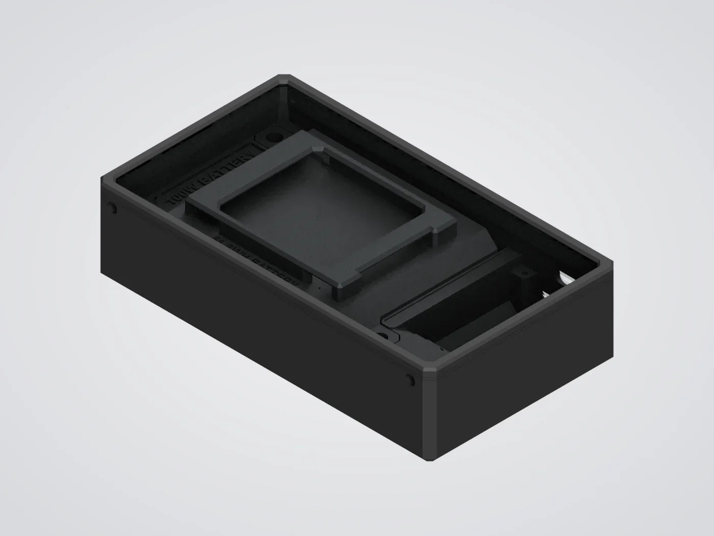

4S Power Bank
실패할 때마다 고쳐
다시 만든 보조배터리
보조배터리 안에는 리튬 셀, 셀을 지키는 보호 회로(BMS), 충전과 출력을 맡는 PCB가 들어갑니다. 이 셋을 3D 프린팅 하우징에 어떻게 넣을지를 취미로 계속 고쳐 왔습니다. 셀 4개를 직렬로 묶은 4S1P 구성으로 네 번 만들었고, 네 번째 45W 버전은 약 6개월 동안 실제로 썼습니다.

지금까지의 마지막 버전, 45W 보조배터리
보조배터리 안에는 리튬 셀, 셀을 지키는 보호 회로(BMS), 충전과 출력을 맡는 PCB가 들어갑니다. 이 셋을 3D 프린팅 하우징에 어떻게 넣을지를 취미로 계속 고쳐 왔습니다. 셀 4개를 직렬로 묶은 4S1P 구성으로 네 번 만들었고, 네 번째 45W 버전은 약 6개월 동안 실제로 썼습니다.
지금까지의 마지막 버전, 45W 보조배터리
설계 모델의 바깥 크기로 잰 부피입니다. 무엇을 바꿔서 줄었는지는 아래 버전별로 적었습니다.
만든 것셀 팩을 눕혀 긴 상자에 넣고, 윗면 전체를 2mm 투명판으로 덮는 설계입니다. 안이 들여다보이는 투명 케이스 전자기기처럼 만들고 싶었습니다. 셀 보호는 전동 드릴 배터리용 BMS가, 충전과 출력은 100W PCB가 맡았습니다.
문제들고 다니기에는 너무 크고 무거웠고, 하우징도 약했습니다. 투명판을 가공할 비용도 고등학생에게는 부담이었습니다. 결국 실제로 쓸 수 없는 프로토타입으로 끝났습니다.
다음에 바꾼 것투명판을 빼고, 부품을 눕히는 대신 세워서 부피를 줄이기로 했습니다.

유리판 버전 설계
만든 것얇은 바닥판 위에 셀 4개를 엇갈리게 세우고, 한쪽에는 BMS, 반대쪽에는 PCB를 세웠습니다. 그 위로 통 모양 본체를 씌워 닫습니다. 부품을 세워 쌓으니 부피가 첫 버전의 약 62%로 줄었습니다.
문제셀과 기판이 하우징 벽에서 떨어져 있어, 열이 빠져나갈 길이 안쪽 공기뿐이었습니다. PLA는 60℃ 안팎에서 물러지는 소재라 하우징 안쪽이 녹기도 했고, 뜨거워지면 충전 속도가 제한됐습니다. 내구성도 여전히 아쉬웠습니다.
다음에 바꾼 것열을 하우징 벽으로 직접 보내는 구조와, 힘을 잘 버티는 뚜껑 고정 방식이 필요했습니다.

본체를 뺀 설계. 바닥판 위에 셀, BMS, PCB가 서 있습니다


열기판 위에 써멀 패드를 붙여 하우징 벽에 닿게 하고, 벽 안쪽에는 구리 테이프를 넓게 붙였습니다. 열이 한곳에 머물지 않고 하우징 전체로 퍼지게 한 것입니다. 따로 방열 구조를 두지 않았지만 과열 문제는 없었습니다.
크기셀을 눕혀 두 줄로 넣고, BMS 대신 셀 전압만 맞춰 주는 밸런싱 보드를 넣어 공간을 줄였습니다. 보호 기능이 줄어드는 만큼 셀 전압을 직접 계속 확인하고 있습니다. 판매용이 아니기에 고를 수 있었던 방식입니다.
내구성본체에 덮개를 씌운 뒤 양옆에서 볼트로 고정합니다. 볼트는 덮개가 빠지지 않게 잡아 주기만 하고 하중은 받지 않아, 이전보다 튼튼해졌습니다.


바꾼 것보조배터리 5와 비슷한 설계에서 셀과 PCB를 붙잡는 구조를 단순하게 바꿨습니다. PCB는 45W로 충전과 출력이 모두 되는 보드로 바꿨고, 끝면 USB-C 옆의 버튼으로 조작합니다.
결과고정 부품이 줄면서 폭이 약 8mm 줄었고, 망가질 곳이 줄어 훨씬 튼튼해졌습니다. 입대 전까지 약 6개월 동안 실제로 썼습니다. 옆면의 핀은 방열을 기대하고 넣었지만 효과가 크지 않아, 지금은 디자인 요소에 가깝습니다.
만든 것셀 2개를 병렬로 묶은 작은 보조배터리입니다. 5V 3A 충방전 모듈을 회색 출력 케이스에 넣고, 모듈의 5V 출력에 USB-C 단자를 직접 이었습니다.
문제기기를 연결해도 충전이 시작되지 않았습니다. USB-C는 전원을 주는 쪽이 CC 핀에 풀업 저항(Rp, 10~56kΩ)을 달아 전원이 있다는 것을 알려야 상대 기기가 전기를 받습니다. 단자만 잇고 이 저항을 빠뜨린 것이 원인으로 보입니다.

1S2P 15W 보조배터리
만든 것충전과 출력이 모두 되는 보드라고 생각하고 하우징을 만들었습니다. 뚜껑 안쪽에는 구리 테이프도 붙였습니다.
문제실제로는 충전 입력만 되는 보드여서, 하우징까지 완성하고도 보조배터리로는 쓸 수 없었습니다.


셀 3개를 직렬로 묶은 3S 45W 보조배터리의 회로와 케이스를 설계하고 있습니다.